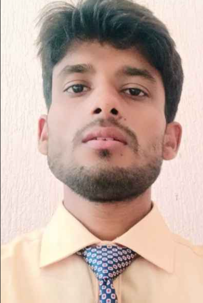
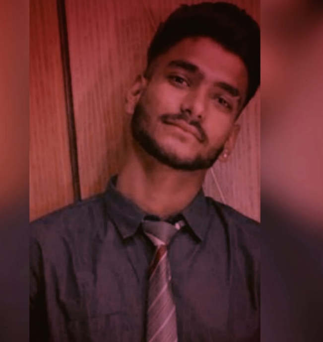

Manas Education Centre
"We provide classroom program for IIT JEE preparation in pattern proof mode. Our team of IITian faculties are dedicated and devoted of highest caliber with a genuine concern for building student's future. Our scientific approach has produced highest Success ratio in JEE Main & JEE Advanced across all over India."
READ MOREDirector's Profile:
For last 8 years of his passion for guiding students to achieve them in various Competitive examinations has
given a new direction in education sector. He completed his schooling from Netarhat Residential School(Jharkhand)
and received his B.Tech degree from IIT Delhi.
He is a student favorite when it comes to imbiling and imparting knowledge to students. He is a renowned speaker And
a motivation Guru. He has deep understanding of the students psyche and keeps bring new perspective to solution designing
process. His profound insights and examples make the student grasp the subject practically. Going one step further he makes
the class interesting relevant for the students. He has the ability to even make the weakest student understand the subject.
Pushkar Srigyan
(B.Tech, IIT Delhi)
Founder & Director
What our students have to say:

Myself Aman Kumar, an alumni of Manas Education Centre. I completed my preparation for the JEE examination from here only and successfully cracked the same in 2019, acquiring AIR 1980 and OBC rank 273. I am currently pursuing my graduation from one of the best Institute of India, INDIAN INSTITUTE OF TECHNOLOGY, BOMBAY under mechanical department. And all these things were only possible because of our Manas Education Centre and it's faculties, who made me able to achieve these.
Aman Kumar
IIT Bombay

One of the best descion I made in my life was studying in Manas, Teachers here are more than just teachers, they are here to help you in every phase of life from preparation to post college. It's been more than 8 years, i still hang around with same friends i made here and still come to same teachers to resolve my doubts. It just they are not sheets and DPP any more.
Ankit Tarway
IIT(ISM), Dhanbad

I have been brought up in Gaya.I wanted to go to Kota for JEE preparation but due to financial issues,
I joined MANAS which provided a competing environment needed for preparation.
DPPs , practice sheets , regular doubt clearance and technical alongwith emotional support of faculties
helped me land in a university with almost zero fees for bachelors. I was able to continue my engineering
easily and right now doing a govt job.
I really want to thank Manas Education Centre specially pushkar
sir for making me such a successful person.
Tarun Kumar
Jadavpur University

Firstly, I would like to thanks to all teachers of MANAS Team for giving me this opportunity. I would like to share that what motivated me throughout my journey in MANAS during JEE preparation. I joined MANAS in 2016. And I can clearly remember that My name used to come in last rows of the result list of Weekly Tests in 11th . But In Manas, there was a ritual to give Pen as a Reward to First 3 Toppers of every Test infront of the class. And that became the motivation for me that someday I would be receiving that pen infront of the whole class and I started following Pushkar Sir and Dharmendra Sir. I tried my best to be consistent and revise whatever they used to teach on daily basis. Their lectures were very helpful in getting more focused and being disciplined. I am very lucky that they were my teachers. With the help of their guidance, I got the opportunity to win those pens every week in Tests in 12th and also Secured AIR - 8090 ( General ) in JEE - Advanced 2018.Currently, I'm working In ADANI Groups. Thanks MANAS and the Team.
Satyam Kumar
NIT Raipur

Hi, Myself Siya and currently pursuing B. Tech. (2019-23 batch) from NIT Patna in ECE. My journey with Manas was started in 2016. All the faculties were very cooperative,motivational and helpful.Especially the doubt clearing facilitiy , DPPs and tests were very helpful. The faculties always focused to improve the students fundamentals and basics which helped me a lot during my engineering too and to cover the tough topic in easier way.I was in all batch of Manas since I was a dropper and they have designed the syllabus in a perfect way such that the revision of whole syllabus will be completed till your exam. So, the main point is to be consistent in revision and problem solving and follow the mentors advice.Even Mentors helped me while counselling to choose a better branch and college according to my future goals..Thank you Manas and their mentors(Dharmendra sir, Pushkar sir ) for achieving my goal from an average student to be an engineer and achieving the offer from campus placement too.I am very happy that Manas is again starting so that it can help an average student to nurture their dreams.
Siya Mehta
NIT Patna

I joined Manas in 2014, studying at Manas was a great experience,
and played a significant role in my selection to NIT Raipur. Teachers at Manas did everything they could to help me
understand the basics, and they were patient enough to answer even my most silly questions. I believe I am capable of
doing any work I wish to do because of the values of dedication, hard work, and discipline that I have learned from
teachers at Manas. I completed my MTech from IIT Kanpur this year and am currently working as a data
analyst at LatentView Analytics.
Apart from academics and career, this institute gave me a very good friend circle that supports and
guides me in every aspect of life.
Mamta Priyadarshi
NIT Raipur

Chandramani Kumar Indian Institute of Information Technology, Allahabad For the small cities like Gaya, MANAS came out as great help for us students at that time. It provided a great platform to us where we nurtured our dreams of studying in top colleges of India. When I joined it and studied there, I got to know how supportive and hardworking faculties are there. Especially Pushkar sir (Physics) and Dharmendra sir (Maths) who were the heart of this coaching were tremendous. Also the DPP and weekly tests culture was very enriching in terms of knowing our weak areas. There were doubt solving sessions and teachers who helped us in learning concepts well. Moreover, these faculties are capable of teaching in any coaching but they chose us at that time so I am thankful ever to them for this.
Chandramani Kumar
IIIT Allahabad
 - enquiry.manaseducation@gmail.com
- enquiry.manaseducation@gmail.com - 8809552269
- 8809552269 - Manas Education Centre, PNB Bank, West
Nutan Nagar, Gaya, Bihar 823001
- Manas Education Centre, PNB Bank, West
Nutan Nagar, Gaya, Bihar 823001